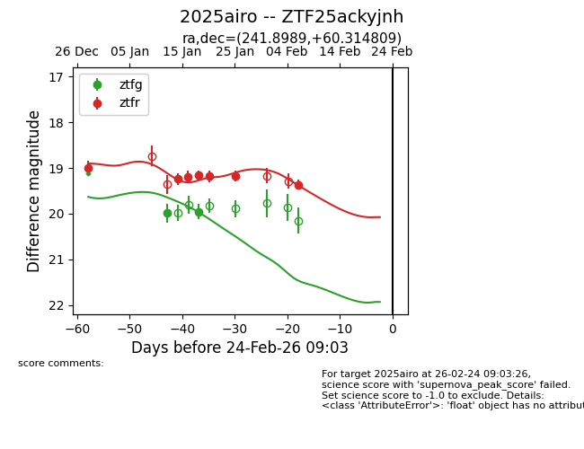
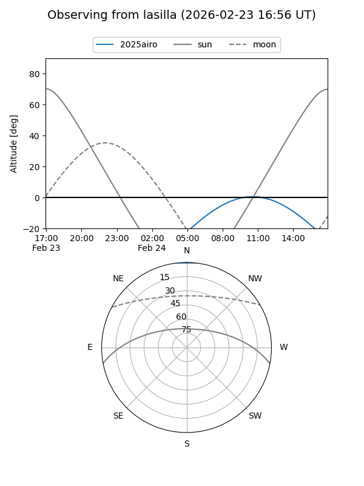
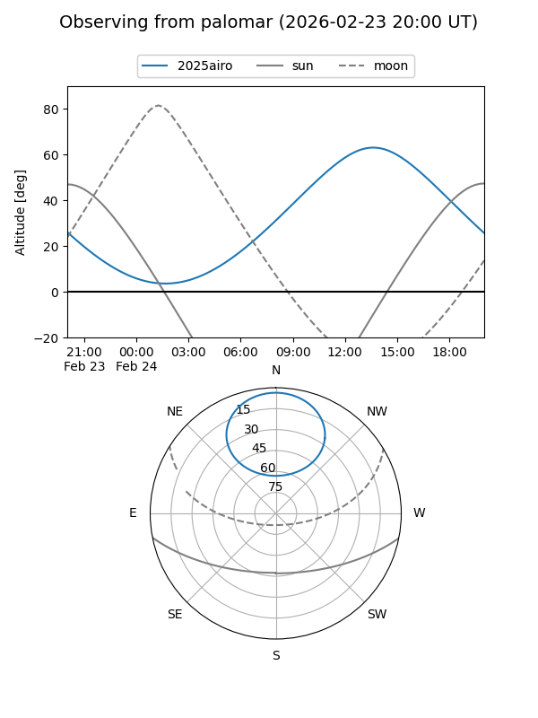
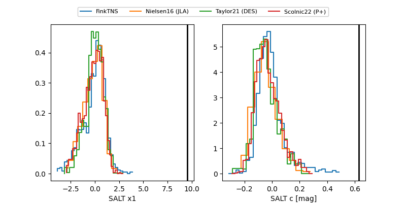

2025airo
Target 2025airo at 2026-01-18 21:16
Aliases and brokers:
FINK: link
Lasair: link
ALeRCE: link
TNS: link
YSE: link
alt names
ZTF25ackyjnh (ztf,fink_ztf)
2025airo (tns,yse)
Coordinates:
equatorial (ra, dec) = 241.8989,+60.31481
equatorial (HMS+DMS) = 16:07:35.74,+60:18:53.31
galactic (l, b) = (92.0430,+43.24119)
Flags:
Photometry:
last ztfg=19.96, ztfr=19.16
2 ztfg, 4 ztfr detections
Lightcurve

Visibility


Additional plots
